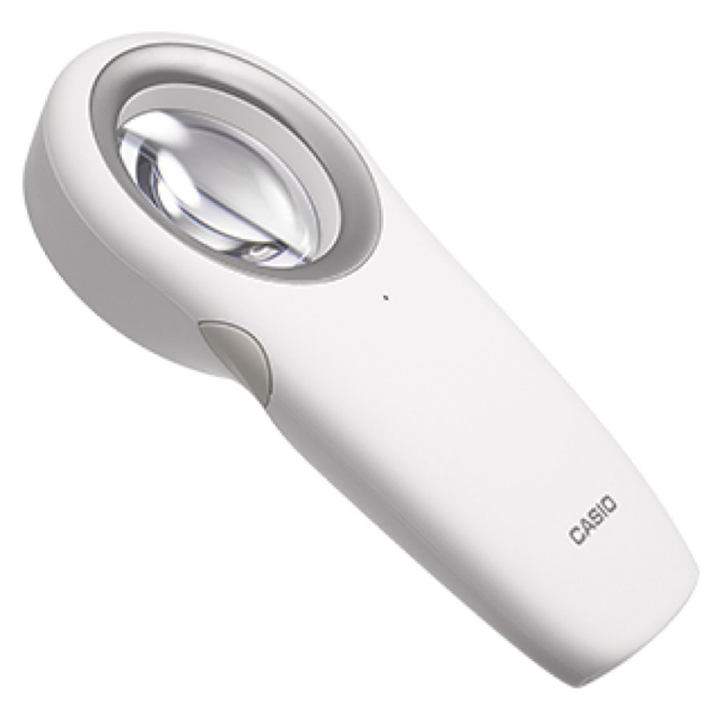
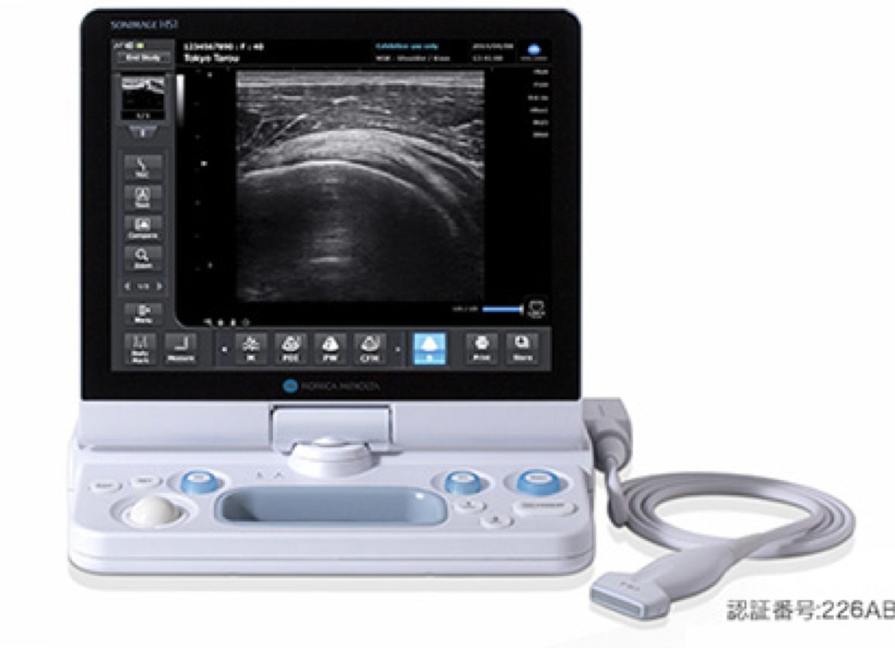
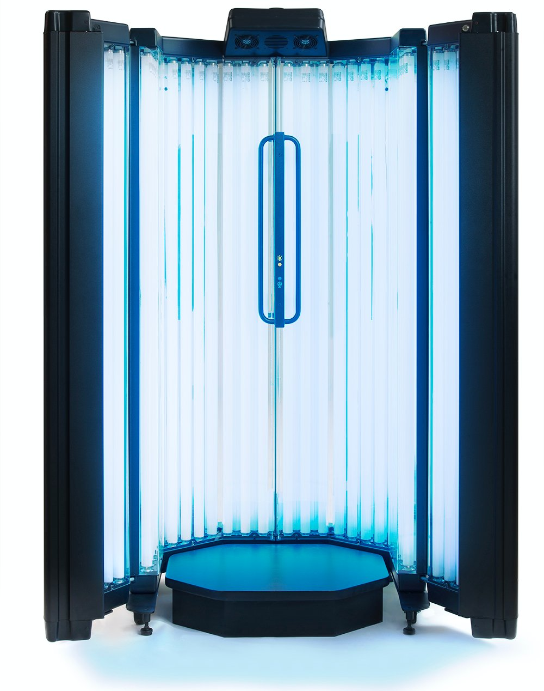
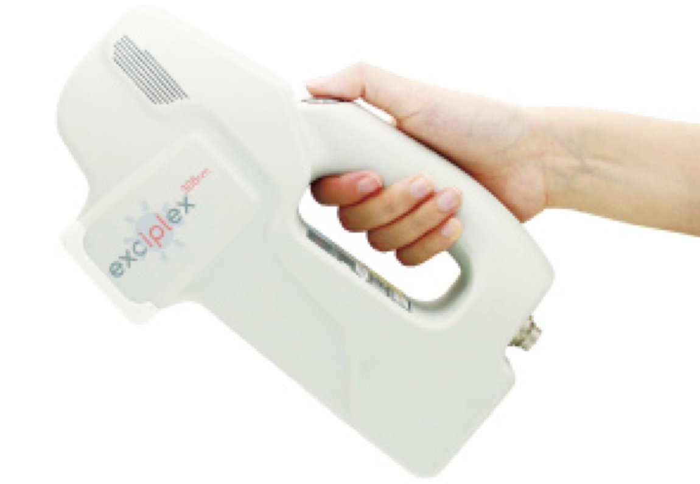
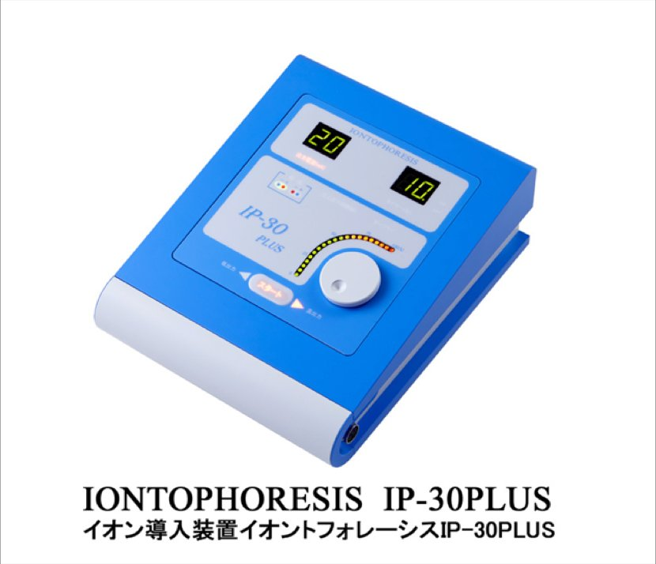
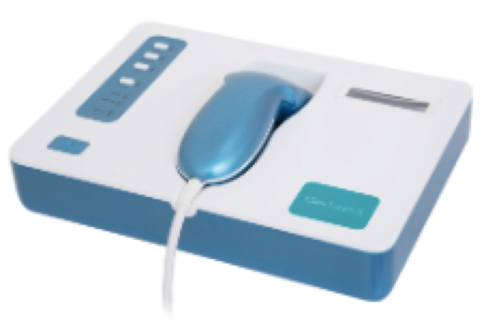
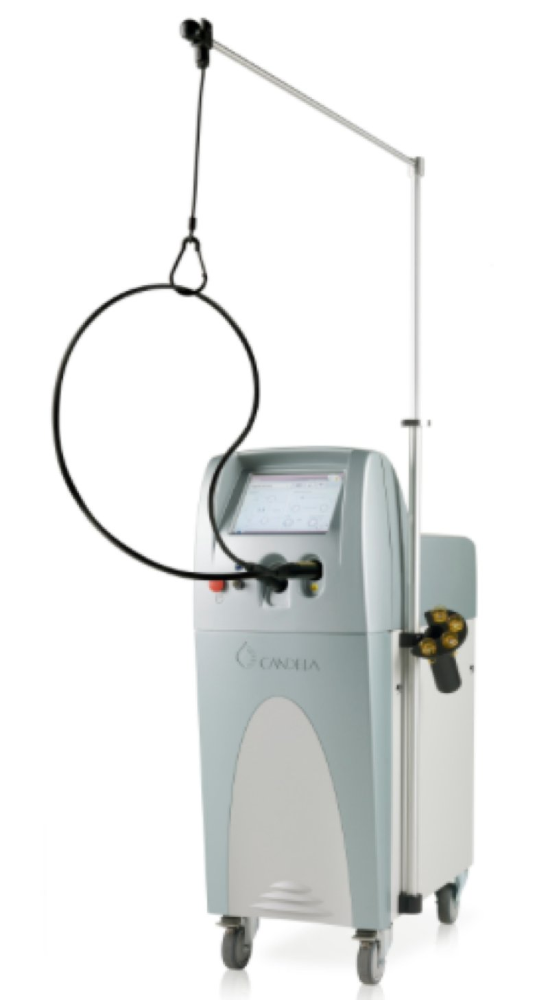
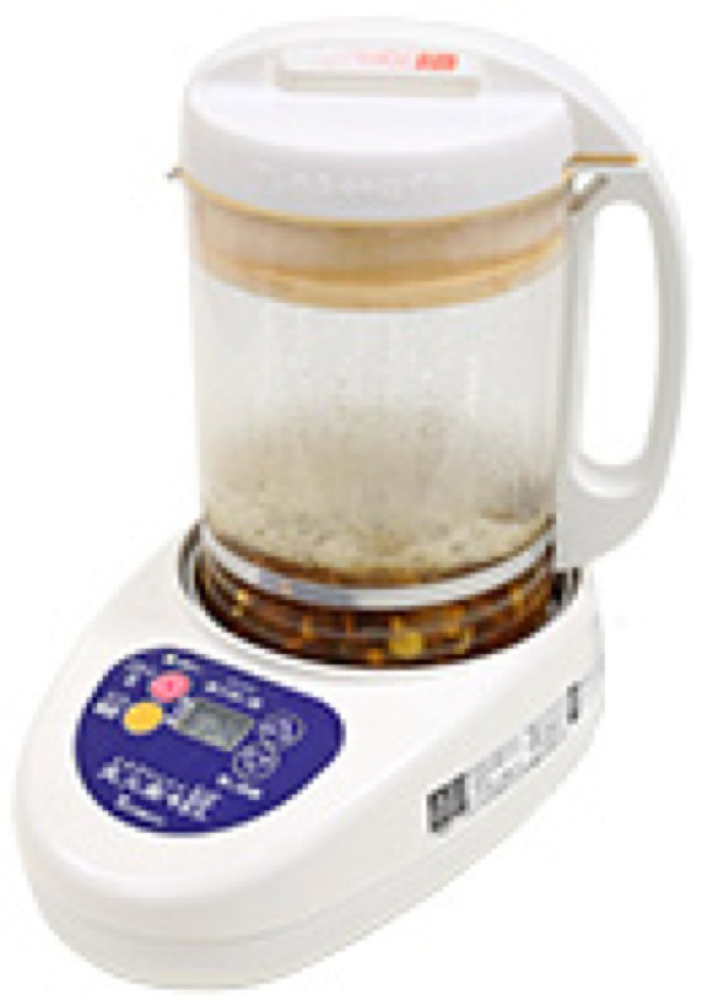
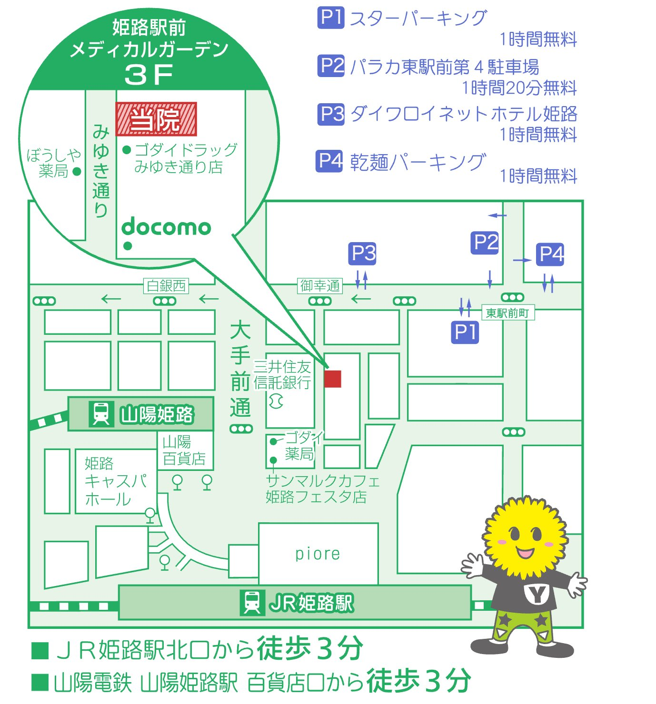
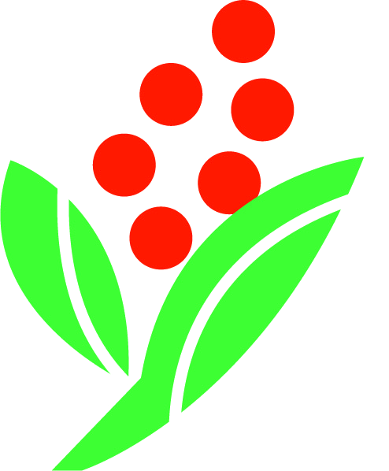

皮膚科専門医による標準治療と
漢方医学の知恵を組み合わせて、
おひとりおひとりに最適な治療をご提案します。
| Time / 時間 | 月 | 火 | 水 | 木 | 金 | 土 | 日 |
|---|---|---|---|---|---|---|---|
| 9:00 — 12:30A. M. | ● | ● | ● | — | ● | 〜13:00 | — |
| 15:00 — 18:30P. M. | ● | ● | ● | — | ● | — | — |
アレルギーの精査から薬の副作用チェック、
治療効果の判定まで、皮膚と全身の状態を
数値で確認できる基本検査です。
食物・花粉・動物・カビ・ダニまで
代表的なアレルゲンを一括スクリーニング。
背中や腕にアレルゲンを貼布して反応を観察。
金属アレルギー・薬疹・接触皮膚炎の
原因究明に有効な検査です。
専用の拡大鏡で皮膚病変を観察し
肉眼では見えない構造を確認します。
診断の精度を高める補助検査です。

超音波で皮膚の深部にあるできもの(腫瘍)を
観察。大きさ・深さ・周囲との境界・内部血流を
詳しく調べることができます。

病変部の一部(直径約3mm)を採取して
病理検査に提出。良性・悪性の鑑別、
病名の確定、治療効果判定に行います。
UVBの中で治療効果の高い波長(311nm)のみを照射。
全身型キャビンで 立ったまま短時間で全身照射 が可能です。

UVBの中で治療効果の高い波長(308nm)のみを
ハンディタイプで 患部のみに集中照射 できます。

手のひら・足の裏を水道水に浸し、微弱な電流を通電。
水素イオンが汗腺の出口を抑制し 汗を出にくくします。

青〜緑色光(430〜580nm)と赤色光(660nm付近)、
そして照射時の温熱の 3つの作用 でニキビにアプローチ。

メラニン色素に選択的に作用する 755nm の波長で、
表皮損傷や色素沈着を起こしにくい治療を実現します。

二千年の知恵を、現代の皮膚診療へ
皮膚症状の背景には、冷え・ストレス・水分代謝の乱れが
ひそんでいます。当院では標準治療で改善しないとき、
副作用で標準治療が難しいときに、
積極的に漢方薬を併用しています。
| 容量調整 | ◎ オーダーメイド処方 |
| 効果 | ○〜◎ 高い |
| 持ち運び | △ 自宅で煎じる |
| 匂い | △〜◎ 生薬の風味 |
| 手間 | △ 毎日煮出す |
| 容量調整 | △ 規格あり |
| 効果 | ○ 安定 |
| 持ち運び | ○ 携帯しやすい |
| 匂い | △〜◎ 製剤による |
| 手間 | ○ 溶かすだけ |
— と ろ び ら ん ら ん た く み —
「煎じ薬は効くけど、毎日煮出すのが大変…」
そんな声に応える、日本製の自動煎じ器。
長期間服用される方に特におすすめです。

当院オリジナル配合、自動煎じ機で作る液体漢方入浴剤
赤ちゃんからお年寄りまで安心してお使いいただけます
季節の変わり目のだるさ、手足の冷え、
抜けない疲れに やさしく寄り添う 一包。
「温めること」と「痒みを止めること」を
漢方の知恵で 両立 させた一包。
「極」はすごく良いけれど毎日には贅沢…
そんな声から生まれた 守りの一包。
体を温める作用の強い生薬を配合。
冷え症・しもやけ でお困りの方に。
保険適応外ですが、有効性の高い治療をご提案
まずはお気軽にご相談ください
肌に優しい サリチル酸マクロゴール を使用。
古い角質を除去して、若くみずみずしい
皮膚の再生を促します。
待ち時間の短縮、便利な受付、駐車場のご案内まで
皆様の通院をスムーズにする情報をまとめました
当院LINEに登録すると 順番予約をワンクリック で。
お知らせ配信もLINEで受け取れます。
前日までの事前予約で、
待ち時間を最小限に。
当日 朝8時(午前)/
14時30分(午後)から受付。

月に1回、女性医師による 美容相談外来を
行っております。お気軽にご相談を。
休診のお知らせから、当院のロゴやマスコットの由来まで
皆様にお伝えしたいことをまとめました
下記の期間、休診とさせていただきます
当院のマスコットは、タンポポ をイメージしたキャラクター。
タンポポの全草を乾燥させたものは、
「蒲公英(ほこうえい)」という生薬の一つです。

ロゴマークは生薬である ナンテン(南天) をイメージしたもの。
縁起の良い木として、江戸時代には多くの家が「火災除け」として玄関前に植えていました。